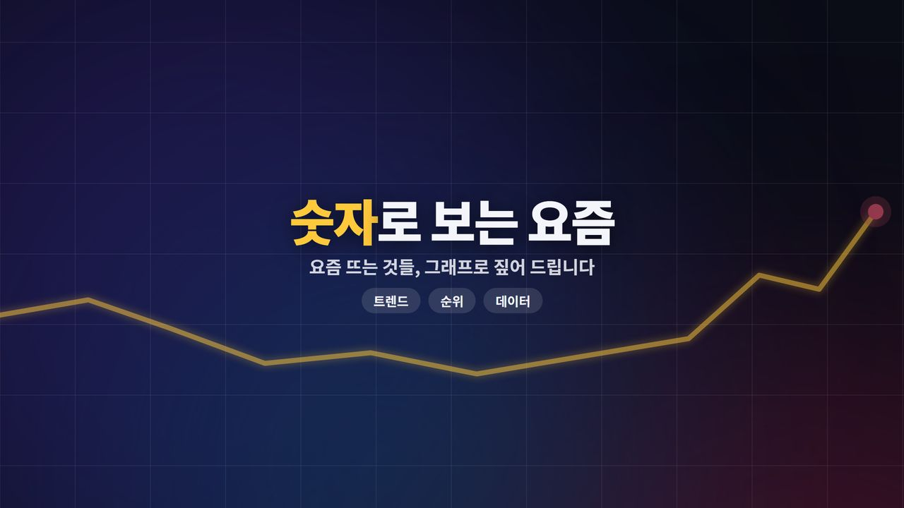

“아빠, 이건
뭐가 달라요?”
뭐가 달라요?”
qna/
여덟 살의 질문
부모가 대충은 아는데 제대로 설명은 못 하는 것들을, 아이 눈높이까지. 가족 채널 모라구의 롱폼 · 쇼츠.

shortube/
숫자로 보는 요즘
요즘 화제를 숫자 몇 개와 직접 그린 그래프로 짚는 쇼츠. 보도 제목이 틀렸으면 바로잡는 것까지.


funtube/
웃긴 영상툰
대본 한 장으로 목소리 · 3D 연기 · 노래까지 만드는 세로 웃긴 영상. 단톡 · 콩트 · 밸런스 게임.
세 채널 제작 · 자동화 가이드
만드는 순서, 시나리오 규칙, API 키 · 과금 규칙, 자동화 명령과 팁을 한 문서에.
그림 · 음성 스타일 가이드
채널별 AI 그림 화풍 문장, AI Studio 에서 고르는 목소리와 말투 지시를 그대로 복사해 쓸 수 있게.